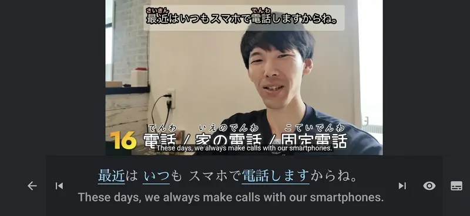

Project 45
An Android app built for a campaign organisation. It had a blog, events that people could create and sort by date, popularity or distance, comments and favourites, and points for taking part.
Senior Android engineer · Scotland
I build Android apps at work. Then I go home and build another one.
01
I’ve been a mobile engineer since February 2021, when I joined VML, and I’m a senior Android engineer there now. In that time I’ve helped ship several apps and then stuck around to maintain them, which is where you find out how good your decisions were.
I’m also learning Japanese. That meant one app for kanji, another for flashcards and a third for grammar, and I wanted them in one place. So I’m building that in my own time. It’s called OSS Nihongo and there’s more about it below.
Three flashcards about me. Tap one to flip it.
02
Work in progress · Kotlin · Android
Studying Japanese usually means juggling a few tools: WaniKani for kanji and vocabulary, Anki for your own decks, Bunpro for grammar. OSS Nihongo is my attempt to put that whole routine into one free app.


On a spaced repetition schedule, synced with your WaniKani account.
Imports your own decks from .apkg files.
Grammar study in the style of Bunpro.
Shows the subtitles, highlights the words you already know and tells you what percentage of a video you know.

Text to speech, home screen widgets, and dark, OLED and paper themes. This site borrows all three.
It isn’t released yet. Right now I’m working on UI polish, grammar content and getting it ready for release. The source will be public when it launches.
Screenshots from a development build. OSS Nihongo is an independent project and isn’t affiliated with WaniKani, Anki or Bunpro.
03
Side projects from 2020 and 2021, when I was starting out with Android. None of them were released and none are running today.
An Android app built for a campaign organisation. It had a blog, events that people could create and sort by date, popularity or distance, comments and favourites, and points for taking part.

A recipe and food rating app. You could browse and search recipes, rate and favourite them, and add your own once signed in.

Built in a week for a TopCoder challenge. It showed global and per-country Covid-19 figures, a map with a marker for each country, and a button to share a screenshot of the current screen.
04
Email is the best way to reach me.
Based in Scotland.